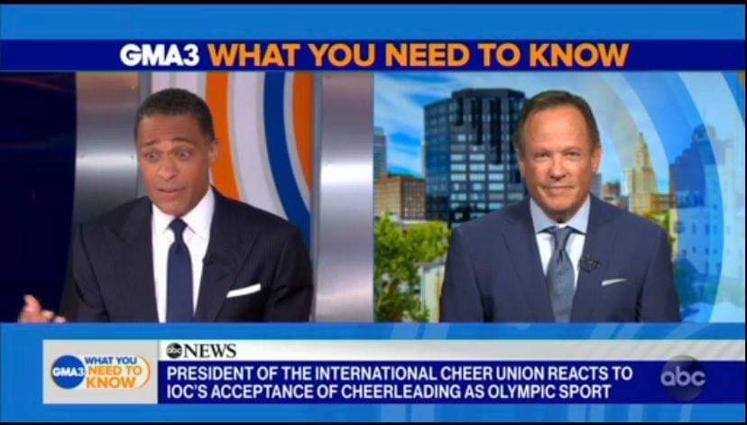

国際オリンピック委員会(IOC)がチアリーディング競技をオリンピック種目に正式承認しました。

国際オリンピック委員会（IOC）が国際チアリーディング連合（ICU）2021年7月20日に東京で行われたIOC総会にて正式承認しました！アメリカのABCニュースに出演した、国際チアリーディング連合のプレシデントであるJeffは本件についてどのように語ったのでしょうか？
IOCからのチアリーディング正式承認が意味することとは？
ABCニュースの中で、国際チアリーディング連合（以下ICU）のプレシデントJeff氏はこう語っています。
チアリーディングを代表する国際組織であるICUが正式承認されたことにより、今後オリンピック競技としてチアリーディングを申請できる立場になりました。
しかしそれ以上に今回の正式承認が意味することがあります。他の多くの国では、スポーツのための政府からの資金繰りはアメリカとは異なります。なので、チアリーディングの施設を確保したり、指導者を確保したり、器具を確保したりするなど、各国でのチアリーディングの繁栄のためには、今回のIOCからの正式承認が必要だったわけです。
もちろん、今回のIOCからの正式承認は、将来オリンピック種目になるための大きな機会です。しかしそれ以上に、世界中の多くの若いアスリートがチアリーディングに参加することができる機会にもなったのです。
ABC NEWS IOC accepts cheerleading as an Olympic sport
というように、Jeff氏は、今回の承認が、オリンピック競技になる大きな機会としつつも、アメリカ以外の国でチアリーディングが発展・繁栄するためのいい機会にもなったと主張していました。
いつチアリーディングがオリンピック競技になるの？
ニュースのインタビュー中では、アナウンサーがひっきりなしに「オリンピック競技になるのはいつなの？東京オリンピックで見られるの？」と冗談を交えながらJeff氏に質問をしていました。
Jeff氏はこの質問に対して、以下のように答えていました。
東京オリンピックでは残念ながら見られないよ（笑）でも我々は2028年のロサンゼルスオリンピックでの正式競技化が一つの目安になると考えています。まあ、お楽しみに。
ABC NEWS IOC accepts cheerleading as an Olympic sport
チアリーディング発祥の国アメリカでの開催となるロサンゼルスオリンピックでの正式競技化を目指して動いているようですね。とはいえまだ決まったわけではないので、今後の動向に注目です。
世界のチアリーディングの動向をJeff氏はどう見ている？
次にインタビューでは、「チアリーディングはアメリカのスポーツという印象がありますが、他の国々でのチアリーディングの人気といえば現状はどうなっているのでしょうか？」という質問がアナウンサーからされました。
それに対し、Jeff氏は以下のように答えていました。
確かに、チアリーディングはアメリカ発祥のスポーツです。アメフトやバスケットボールの応援（サイドライン）からどんどん広がりました。ICUとしては、現代的なコンセプトのチアリーディングを創っています。それが、“競技的“な要素を含めたチアリーディングなのです。
ESPN（補足：ディズニーワールド内にあり、毎年チアリーディングの世界大会が開催されている施設の名称）で開催されるチアリーディングの大会をすでに30年以上主催していて、確かにアメリカでの人気が強かったのですが、この20年間で、チアリーディングの人気が国際的に爆発的に伸びました。
現在はICUには114カ国が加盟し、毎年70カ国以上の国が世界大会に参加しており、グローバル現象になっているのです。
ABC NEWS IOC accepts cheerleading as an Olympic sport
加盟国の多さから見ても、また実際に世界大会に参加する国の数で見てもここ20年間での国際的な人気の広がりは感じているようです。
インタビューの最後には、アメリカでは、若い世代の競技人口はどれくらいなのかと質問され、レクリエーションとしてのチアなど様々なので一概にはいえないが、およそ150万人はいるのではないかとJeff氏は回答していました。若い世代とは具体的に何歳から何歳までをさしているのかがよくわかりませんが、ユース世代だけでも150万人いるとすると、全体競技人口は計り知れないですね。
今後のチアリーディングの動向に期待です！
参照：https://abcnews.go.com/GMA/GMA3/video/ioc-accepts-cheerleading-olympic-sport-78950645